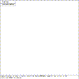
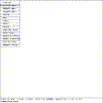

 Figure (faceplate): The MGED Editor Faceplate
When the MGED program has a display device attached, it displays a border around the region of the screen being used along with some ancillary status information. Together, this information is termed the editor ``faceplate''. See Figure (faceplate) . In the upper left corner of the display is a small enclosed area which is used to display the current editor state; this is discussed further in the Editor States section, below.
 Figure (buttonmenu): The Pop-Up Button Menu
Underneath the state display is a zone in which three ``pop-up'' menus may appear. The top menu is termed the ``button menu,'' as it contains menu items which duplicate many of the functions assigned to the button box. Having these frequently used functions available on a pop-up menu can greatly decrease the number of times that the user needs to remove his hand from the pointing device (either mouse or tablet puck) to reach for the buttons. An example of the faceplate and first level menu is shown in Figure (buttonmenu) . The second menu is used primarily for the various editing states, at which time it contains all the editing operations which are generic across all objects (scaling, rotation, and translation). The third menu contains selections for object-specific editing operations. The choices on these menus are detailed below.
It is important to note that while some display hardware that MGED runs on has inherent support for pop-up menus included, MGED does not presently take advantage of that support, preferring to depend on the portable menu system within MGED instead. It is not clear whether the slight increase in functionality that might accrue from using display-specific menu capabilities would offset the slight nuisance of a non-uniform user interface.
Running across the entire bottom of the faceplate is a thin rectangular display area which holds two lines of text. The first line always contains a numeric display of the model-space coordinates of the center of the view and the current size of the viewing cube, both in the currently selected editing units. The first line also contains the current rotation rates. The second line has several uses, depending on editor mode. Normally it displays the formal name of the database that is being edited, but in various editing states this second line will instead contain certain path selection information. When the angle/distance cursor function is activated, the second line will be used to display the current settings of the cursor.
It is important to mention that while the database records all data in terms of the fixed base unit of millimeters, all numeric interaction between the user and the editor are in terms of user-selected display [or local] units. The user may select from millimeters, centimeters, meters, inches, and feet, and the currently active display units are noted in the first display line.
The concept of the ``viewing cube'' is an important one. Objects drawn on the screen are clipped in X, Y, and Z, to the size indicated on the first status line. This feature allows extraneous wireframes which are positioned within view in X and Y, but quite far away in the Z direction to not be seen, keeping the display free from irrelevant objects when zooming in. Some display managers can selectively enable and disable Z axis clipping as a viewing aid.
{kind=link}
{kind=link}